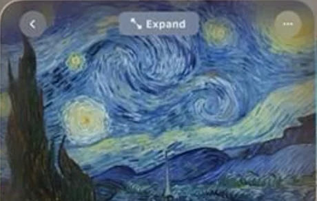

Technical Architecture & Performance SLA
Engineered with zero-dependency ES6 modules, hardware-accelerated transform compositing, and sub-16ms frame budgets across desktop and mobile viewports.
02 / Curatorial Conservation Telemetry
Adjust the grazing illumination angle across the Saint-Rémy canvas surface to measure lead-white ridge elevation and cobalt-ultramarine pigment density.
03 / Permanent Spatial Catalog
| Catalog No. | Title | Completed | Dimensions | Action |
|---|---|---|---|---|
| F612 / JH1731 | The Starry Night | June 1889 | 29 × 36 1/4 in. | |
| F615 / JH1756 | Wheatfield with Cypresses | July 1889 | 28 3/4 × 36 3/4 in. | |
| F671 / JH1891 | Almond Blossoms | Feb 1890 | 28 7/8 × 36 1/4 in. |